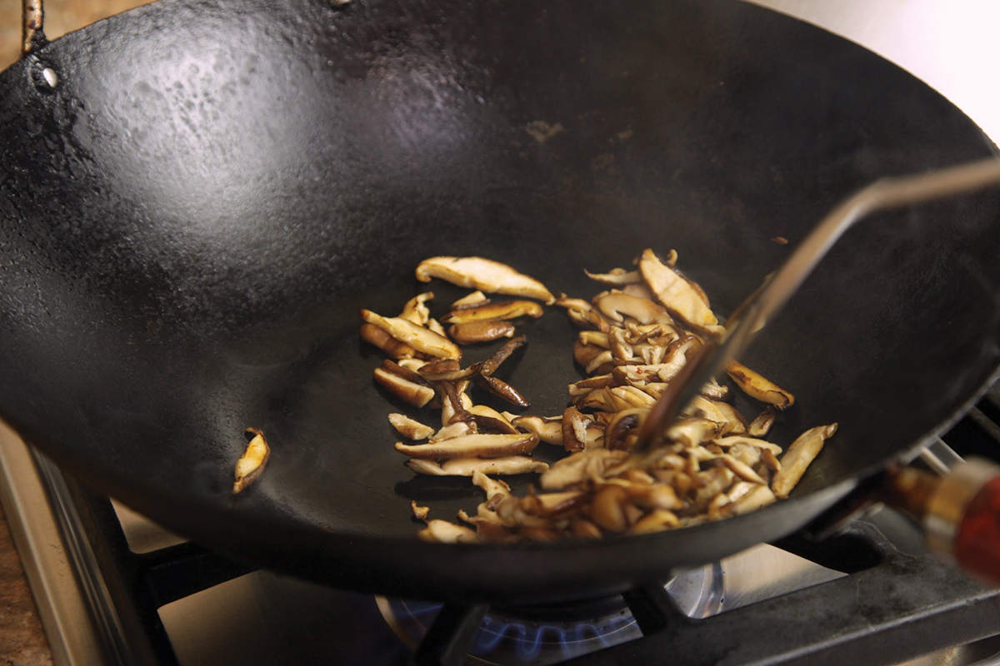
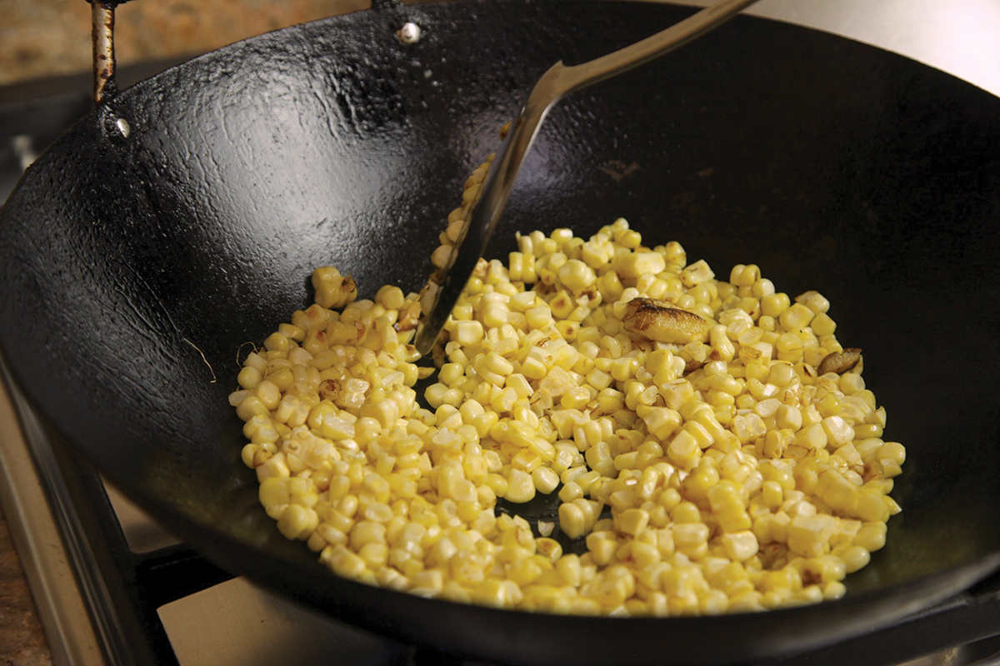
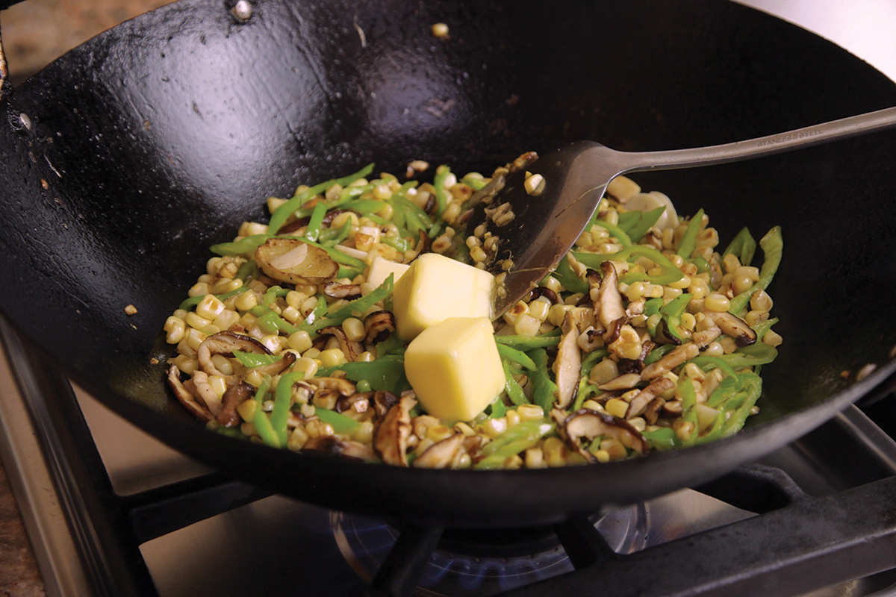
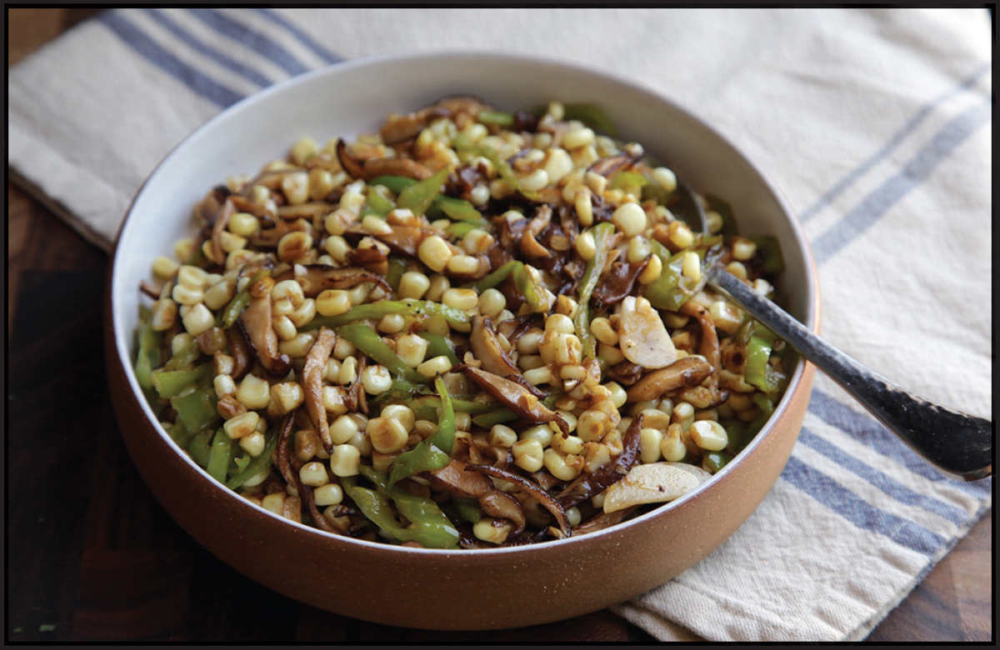

STIR-FRIED CORN AND MUSHROOMS WITH HOT PEPPERS AND SOY BUTTER
|
Yield Serves 4 Active Time 15 minutes Total Time 15 minutes |
You can use frozen corn for this recipe. Thaw the corn and spin it in a paper-towel-lined salad spinner to remove excess moisture. |
INGREDIENTS
2 tablespoons (30 ml) peanut, rice bran, or other neutral oil
2 coin-sized slices fresh ginger (10 g)
6 ounces (175 g) shiitake mushrooms, stems discarded and caps thinly sliced
4 medium garlic cloves (12 g), thinly sliced
12 fresh hot chiles, such as Chinese cowhorn, Anaheim, jalapeño, or serrano (or fewer to taste), split in half, stem, seeds, and ribs removed, thinly sliced on a bias
1½ cups (about 9 ounces/260 g) fresh corn kernels, cut from 4 ears fresh corn (see Note)
2 tablespoons (30 g) unsalted butter
1 tablespoon (15 ml) light soy sauce or shoyu
Kosher salt
Grilled corn drizzled with soy sauce and melted butter is a common street snack in Japan (and my backyard during the summer). In this dish I decided to combine the same flavors—butter and soy sauce and corn—in a simple stir-fry.
Corn is a unique vegetable because, well, it’s not really a vegetable. It’s a grain, and as for all grains, each kernel is covered in a hard layer called the pericarp. This layer is very good at standing up to prolonged cooking, making it nearly impossible to overcook corn. This is particularly useful when stir-frying, as it means you can easily let the corn in the wok develop a nice nutty char without worrying about it turning mushy.
Corn works well with hot peppers, so I add some long green peppers thinly sliced on a bias to this stir-fry (any hot pepper like serrano or jalapeño would do), as well as some shiitake mushrooms for texture and some umami depth. It’s delicious as a side dish for pork or chicken or simply on its own over a bowl of rice.



DIRECTIONS
1Heat a wok over high heat until lightly smoking. Add 1 tablespoon (15 ml) of the oil and swirl to coat. Add 1 slice of the ginger and let it sizzle for 10 seconds. Immediately add the mushrooms and stir-fry until spotty brown and crisp in spots, about 1 minute. Add the garlic and hot peppers and stir-fry until fragrant and the garlic is lightly browned, about 30 seconds. Transfer to a bowl and set aside.
2Return the wok to high heat until lightly smoking. Add the remaining tablespoon (15 ml) of oil and swirl to coat. Add the remaining ginger and let it sizzle for 10 seconds. Add the corn and cook, stirring and tossing occasionally, until the corn is blistered and lightly blackened in spots, about 5 minutes.
3Return the mushrooms, garlic, and chiles to the wok. Add the butter. Swirl in the soy sauce around the edges of the wok. Toss to combine until the butter is melted. Season to taste with salt, transfer to a serving platter, and serve immediately.
